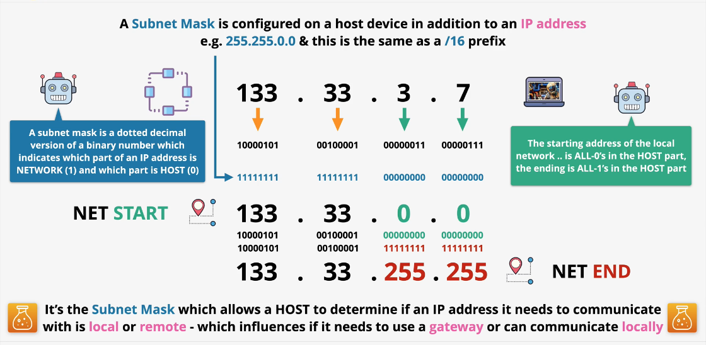
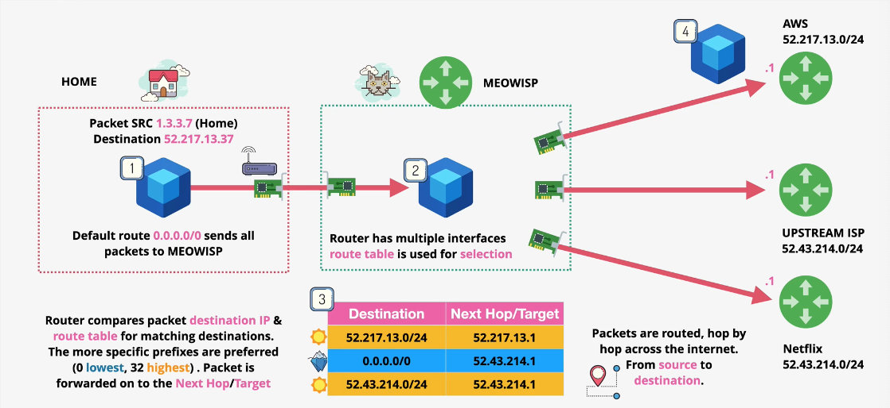
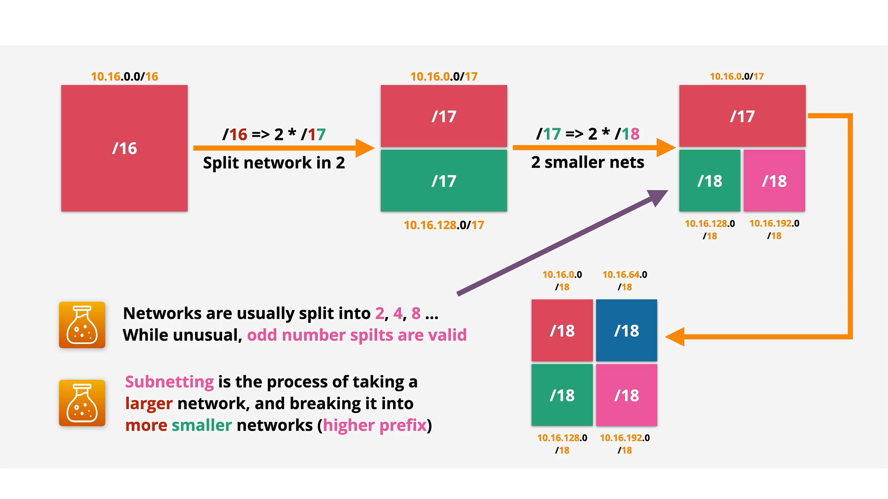

Tech Fundamentals
Networking Starter Pack
OSI 7-Layer Model
https://en.wikipedia.org/wiki/OSI_model
💡 A layer 1 device only understands layer 1 whereas a layer 3 device understands layers 1, 2, and 3
Media layers
- Physical, data link, network
- Dealing with how data is moved between point A and point B
Host layers
- Transport, session, presentation, application
- How data is chunked/grouped and reassembled as well as formatted so it can be understood
Physical (layer 1)
Overview
- Transmission and reception of raw bit streams (zeros and ones) between a device and a shared physical medium
- Physical medium can be copper (electrical), fiber (light), or WIFI (radio frequency)
- Defines voltage levels, timing, rates, distances, modulation, and connectors
Example: Hubs
- Anything which a hub receives on any port is re-transmitted on all other ports, including errors and collisions
- At layer one, no individual device addresses
- If multiple devices transmit at once, a collision occurs and all information is useless
- No media access control. i.e. cannot control which devices are allowed to transmit
- Collisions are almost guaranteed - likelihood increases with # of devices
- layer 1 cannot detect when collisions occur
- layer 1 networks do not scale well
- no device to device communication
- layer 1 is only practical when layer 2 is added on top
Data link (layer 2)
- requires layer 1 (OSI higher layers rely on all layers below itself)
- One of the most critical layers because it supports all data transfer
- Detects and mitigates data collisions
- Data link frame: format for sending information over a layer 2 network
- Layer 2 introduces MAC address: uniquely assigned to a piece of hardware
- two parts: OUI (manufacturer) and network interface controller (NIC) specific
- MAC address should be globally unique
- layer 2 networks can only communicate with other layer 2 networks that use the same protocol (e.g. ethernet)
- most common protocol for local networks is ethernet
- long distance, point to point links use protocols like PPP/MPLS/ATM
Frame
- Preamble: start of the frame
- MAC header
- Destination MAC address
- Source MAC address: allows it to receive replies
- Ether type (ET): the layer 3 protocol is being used. Example: internet protocol (IP)
- Payload
- the data being sent via the layer 3 protocol
- 46-1500 bytes
- Frame check sequence (FCS)
- Cyclic redundancy check (CRC)
- Allows destination to check for accidental data errors/changes/corruption
CSMA/CD
- carrier sense multiple access (CSMA)
- check for carrier -> if no carrier, layer 1 takes the frame data and transmits
- collision detection (CD)
- if collision is detected, a jam signal is sent by all devices and a random backoff occurs. Then it retries. Process repeats, with increasing backoffs, if necessary.
- encapsulation: wrapping data inside something else (e.g. wrapping data in a frame)
- Unicast communication: 1 to 1
- Broadcase communication: 1 to all
Example: Switches
- Understands layer 2
- maintains a MAC address table and keeps track of addresses attached to which port
- if it receives a frame and knows which port the destination address belongs to, it will send it to that port only
- if it receives a frame and does not know which port the destination address belongs to, it will send it to all other ports
- switches store the frame, forward it, and then discard it
- switches do not forward collisions so each port is a separate collision domain which reduces collisions
Network (layer 3)
- Internet protocol (IP) is a layer 3 protocol
- add cross-network IP addressing and routing between LANs without direct P2P
- routers are L3 devices that remove frame encapsulation and add new frame encapsulation at every hop
- packets can be delivered out of order -> need layer 4 for this
- cannot handle different channels of communication -> need layer 4 for this
- no flow control - if dest device is slower, packet loss occurs
L3 IP packet structure
- destination and source addresses don't have to be in the same LAN like with L2
- the frame changes for each LAN the frame is moving through
- the packet doesn't change!
IPv4 packet
packet fields (only a subset that is relevant right now)
- source and destination IP addresses
- data: from layer 4 protocol
- protocol: ICMP (1), TCP (6), UDP (17)
- Time to live (TTL): max number of hops the packet can take before being discarded
IP addressing
- dotted decimal notation
- e.g. 127.0.0.1
- 4 decimals 0-255
- all IP addresses have a network and a host part
- the prefix (e.g. /24, /16) determines which is the network part and which is the host part
- two IP addresses are on the same IP network if the network part is the same
- subnet mask determines if the IP address is local or remote
- if remote, it needs to use the default gateway

IPv6 packet
packet fields (subset)
- source and destination IP addresses (bigger, more possible addresses)
- more space taken in the packet
- data: from layer 4 protocol
- Hop limit: max number of hops the packet can take before being discarded
Route tables & routes
- routers have one to many route tables
- a route table consists of a destination and the next hop/target to get there (e.g. the gateway to the network)
- router chooses the most specific destination route
- that means whichever matches and has the highest prefix number because there are fewer host IP addresses
- route tables have a default route that matches if nothing else does
- border gateway protocol (BGP) allows routers to communicate to each other networks they know
- routers wrap packets in frames and forward at layer 2

Address resolution protocol (ARP)
- convert IP to MAC
- needed because local network data is moved via L2 frames over L1
- broadcasts to other devices: who has x.x.x.x IP address? ARP on other device responds with MAC address
Transport (layer 4)
Both are built in IP
TCP
- slower
- reliable
- bi-directional
- Segments/TCP header
- encapsulated within packets
- TCP header contents:
- src port
- dest port
- sequence number (for ordering within a connection)
- acknowledgement (verify received up to a sequence number)
- flags 'n' things (close conn/sync/data offset)
- window (# of bytes between ack before sender stops and waits, used by receiving device as a form of flow control)
- checksum (detect errors)
- urgent pointer (set so TCP control traffic takes processing priority over other packets)
- options
- padding
- segment also includes the data
- uses random port on client, known port on server
TCP Handshake
- client sends SYN segment with start sequence (random #)
- server responds with SYN-ACK segment with server start sequence and sets acknowledge to client start sequence +1
- client sends ACK incrementing sequence header and acknowledgement header fields again
TCP Sessions/state
- stateless firewall - doensn't understand state of connection
- would need rule to allow outbound connection on port ? to ip/port ? and a rule to allow inbound connection from ip/port ? to port ?
- Example: AWS Network ACL
- stateful firewall
- sees outbound from port ? to ip/port ? and implicitly allows inbound
- Example: AWS Security Group
UDP
- fast
- less-reliable
Session (layer 5)
Presentation (layer 6)
Application (layer 7)
Network Address Translation (NAT)
- help with shortage of IPv4 addresses
- some security benefits
- translates private IPv4 to public
Static NAT (AWS Internet Gateway IGW)
- 1 private to 1 (fixed) public address
- router (NAT device) maintains a NAT table
Dynamic NAT
- 1 private to 1st available public
- used when have many private IPs and more than # of public IPs
Port address translation PAT (AWS NATGW)
- many private to 1 public (AWS NATGW)
- most home networks
- uses source (private) IP and source port, public IP and public source port
IP Addressing & Subnetting
- Class A
- large networks
- 0.0.0.0 - 127.255.255.255
- 1.x.x.x - 127.x.x.x (16,777,216 IPs for each network)
- Class B
- medium size networks
- 128.0.0.0 - 191.255.255.255
- 128.0.x.x - 191.255.x.x (65,536 IPs for each network)
- Class B
- small networks
- 192.0.0.0 - 223.255.255.255
- 192.0.1.x - 223.255.255.x (256 IPs for each network)
Private IPs
- RFC1918
- 10.0.0.0 - 10.255.255.255 (1 Class A network)
- 172.16.0.0 - 172.31.255.255 (16 Class B networks)
- 192.168.0.0 - 192.168.255.255 (256 Class C networks)
IPv6
- management isn't needed anymore since there are so many IP address
Subnetting

DDoS
- Application layer (HTTP flood)
- Protocol attack (SYN flood)
- server hangs trying to make handshake with an IP address that was spoofed
- Volumetric (DNS amplification)
- make large number of DNS requests where source address is IP address of legitimate website
- client devices need very little processing power for this type of attack
How does an attacker do ths?
- Control a network of compromised devices (botnet)
- The botnet client devices make requests are cheap/fast but expensive/computationally intense for servers to handle
Hashing
- examples: MD5, SHA256
- MD5 not recommended due to collisions (different data resulting in same hash)
- turn data into fixed length representation
- hash function is an algorithm
- hash will be tiny regardless of size of data
- any change to data will change hash value
- one way only
- no way to reverse engineer hash back to data other than brute force and comparing (not realistic with modern hash functions)
Digital Signatures
- Verify integrity and authenticity
- sign with private key, verify with public key
DNS
- each domain has a zone file that links the name (e.g.
wwwsubdomain) to an IP address. - Zonefile
- HOW the DNS data is stored
- physical database for the zone
- is hosted by a name server (NS)
- could be located anywhere so DNS resolver needs to be able to locate it so DNS client can query it
- DNS resolver
- queries DNS so could be in DNS client, in router, or at ISP
- recursive resolver because it handles all the intermediate steps and returns result
- Zone
- WHAT the DNS data is
- part of the DNS database (e.g. amazon.com)
DNS root
- upside down tree, reads domain right to left
- assumed period at the end (e.g.
.comis actually.com.) - 13 DNS root servers, they don't manage the DNS database
- operating system has root hints file that points to DNS root servers
- root server accesses the root zone
- root zone is managed by IANA
- IANA is in charge of DNS
- IANA is trusted because device is told to by root hints file
- trusted = authority, authoritative
- IANA is authoritative for the root zone
- root zone delegates part to another zone and that other zone becomes authoritative for only the delegate portion
- root database/zone handles TLDs
- generic/gTLD (e.g.
.com,.org) - country code/ccTLD (e.g.
.uk) - root zone delegates specific TLD to another zone
- generic/gTLD (e.g.